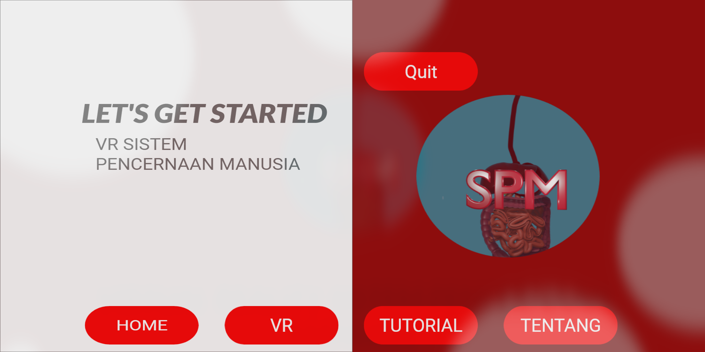
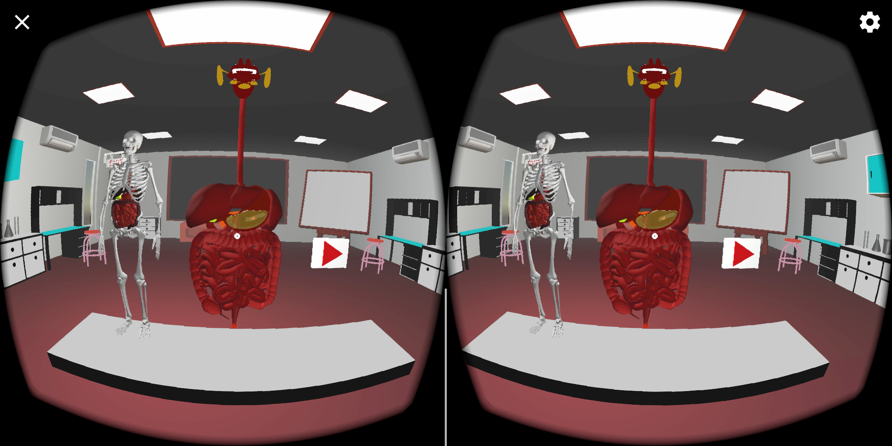
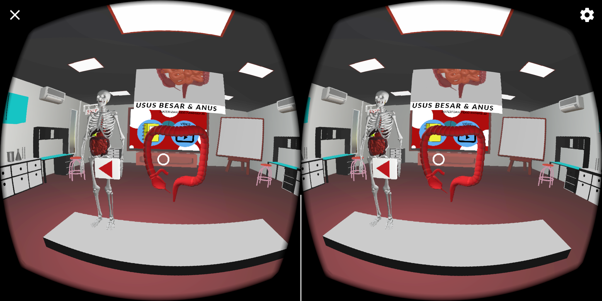
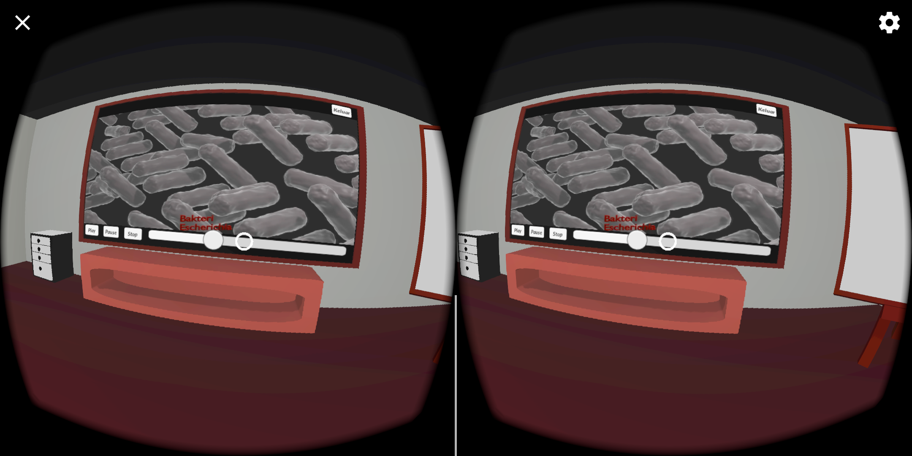
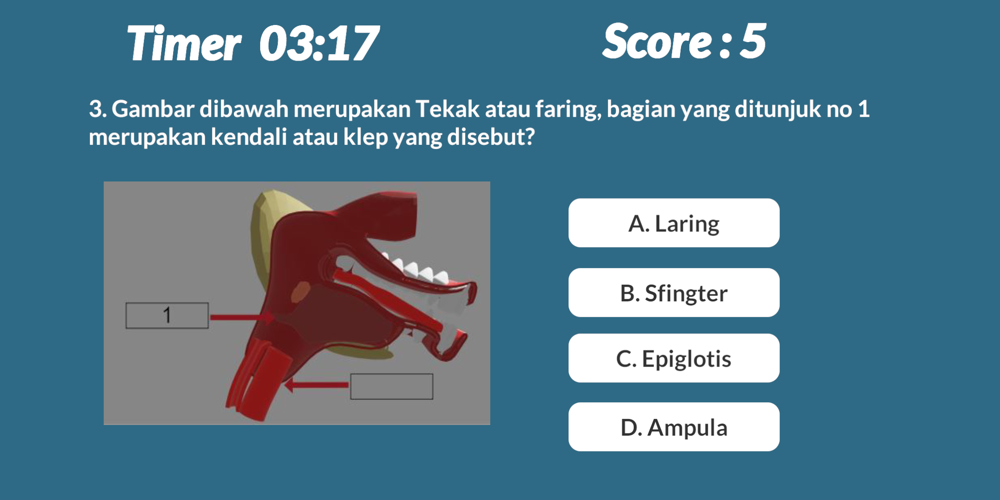
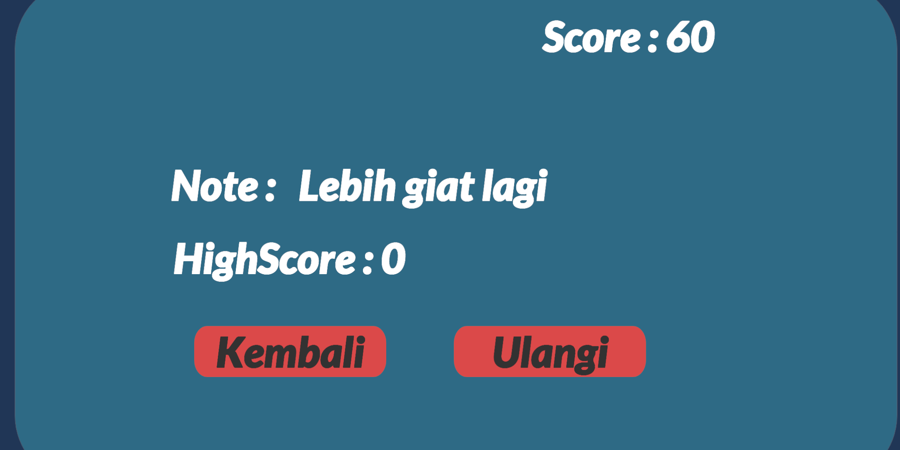

Category : Media Pembelajaran
Client : SMAN CIKIDANG
Project Date : Juli 2021
Video : Video Link
Link Aplikasi : Google Drive
Aplikasi Media Pembelajaran Sistem Pencernaan Manusia Menggunakan VR dengan latar tempat Virtual Laboratorium
Aplikasi ini dibuat untuk melakukan hasil Skripsi dengan judul "Implementasi Virtual Reality Pada Media Pembelajaran Sistem
Pencernaan Manusia Menggunakan Virtual Laboratorium Berbasis
Android"
Aplikasi yang interaktif disertai 3D modelling organ sistem pencernaan manusia, video Pembelajaran, dan kuis.